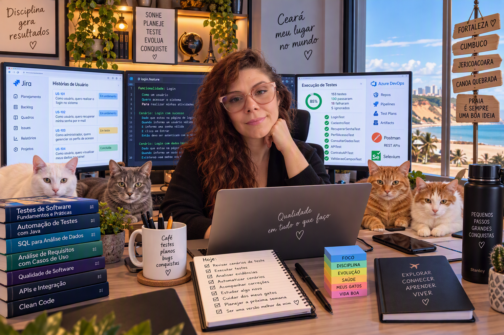
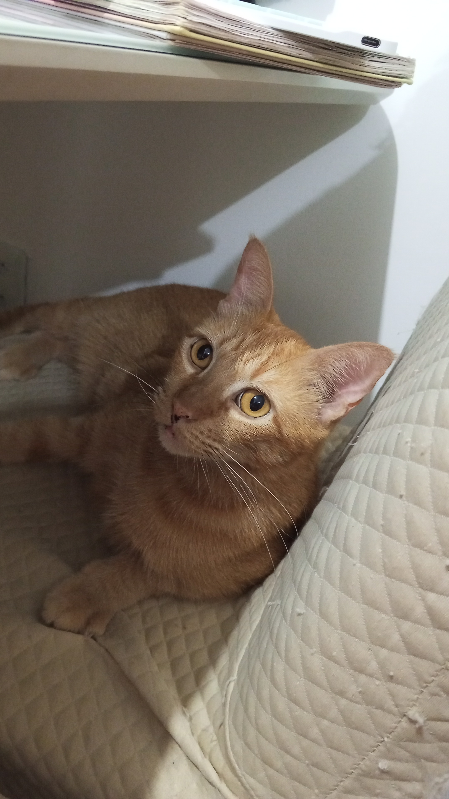
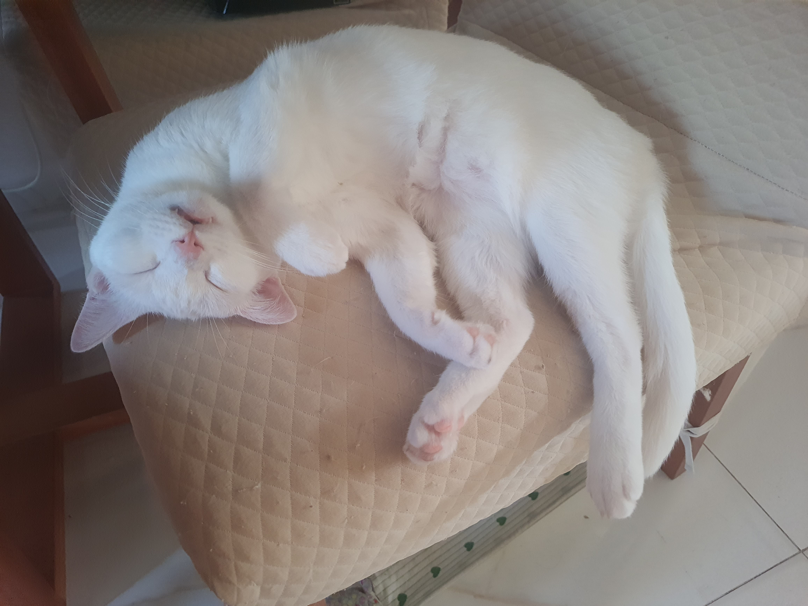
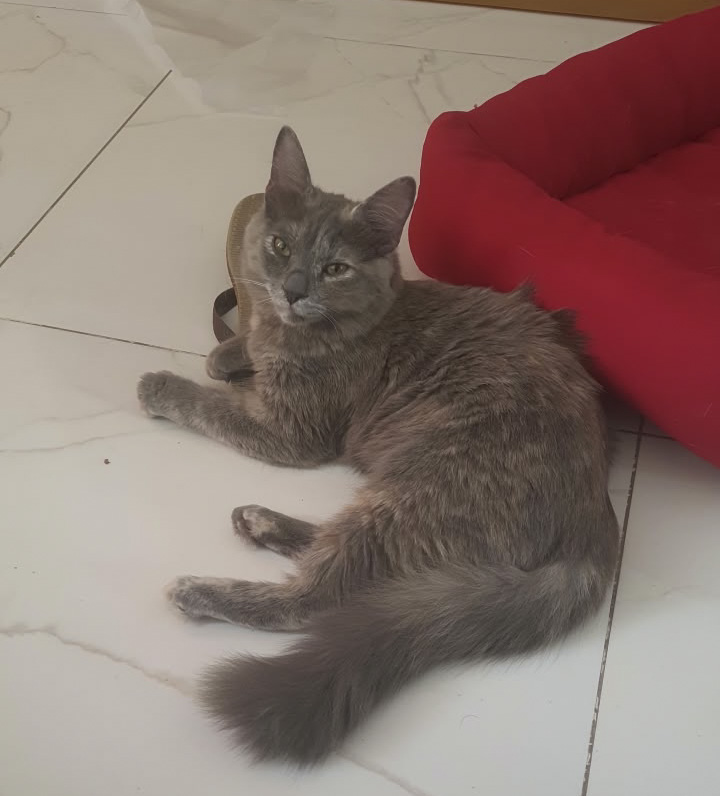
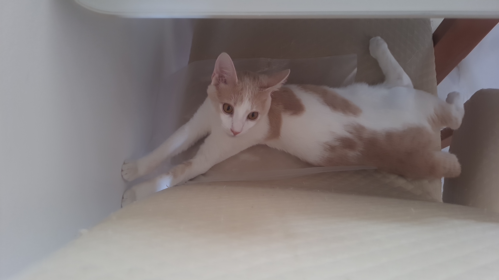

👩 Sobre mim
postado 30 outubro 2026
Sou profissional de Qualidade de Software com mais de 15 anos de experiência em tecnologia que adora gatos e um bom café.
📖 Minha História
Minha trajetória na área de tecnologia começou com minha formação em desenvolvimento de software no Centro Federal de Educação Tecnológica do Ceará (CEFET), onde adquiri os primeiros conhecimentos técnicos que serviriam de base para minha carreira profissional. Desde então, venho construindo uma trajetória marcada pelo aprendizado contínuo e pela busca pela excelência na entrega de soluções de software.
Ao longo dos anos, atuei em projetos de diferentes segmentos, participando de atividades relacionadas ao desenvolvimento, análise e principalmente à qualidade de software. Essa experiência permitiu desenvolver uma visão abrangente do ciclo de vida das aplicações, compreendendo tanto os desafios técnicos quanto a importância de garantir produtos confiáveis e de qualidade para os usuários.
Minha carreira consolidou-se na área de Qualidade de Software, atuando com testes manuais, testes de regressão, automação de testes e melhoria contínua de processos. Durante essa jornada, trabalhei com ferramentas e tecnologias amplamente utilizadas no mercado, contribuindo para projetos corporativos de diferentes portes e complexidades.
Com a evolução profissional, passei a assumir responsabilidades de liderança técnica e mentoria, apoiando equipes na adoção de boas práticas de qualidade, automação e gestão de testes. Atualmente, atuo como QA Tech Lead na Capgemini, participando da construção de soluções que unem qualidade, eficiência e inovação tecnológica.
Buscando ampliar continuamente meus conhecimentos, mantenho meu desenvolvimento acadêmico por meio do curso de Engenharia de Software na UNINTER Centro Universitário Internacional, complementando a experiência prática adquirida ao longo da carreira com uma formação sólida e atualizada.
🧩 Autismo e Autoconhecimento
Por grande parte da minha vida, eu percebia que algumas experiências que pareciam comuns para outras pessoas eram muito intensas para mim. No entanto, eu não entendia exatamente o motivo dessas diferenças.
Há cerca de cinco anos, durante um relacionamento, vivi uma situação que despertou minha atenção. Um simples toque carinhoso, que deveria transmitir conforto e afeto, provocava uma sensação extremamente desconfortável, como se uma lixa estivesse passando sobre minha pele. Aquilo não parecia normal e me fez começar a refletir sobre algumas características que sempre estiveram presentes na minha vida.
Algum tempo antes, minha irmã mais nova já havia comentado que eu lembrava bastante o personagem Sheldon Cooper, da série The Big Bang Theory. Meu irmão também observava comportamentos semelhantes. Na época, encarei essas observações apenas como brincadeiras, mas elas voltaram à minha mente quando comecei a questionar o motivo de algumas experiências sensoriais serem tão diferentes para mim.
Foi então que comecei a pesquisar sobre o Transtorno do Espectro Autista, especialmente sobre como ele se manifesta em mulheres. Descobri que muitas características femininas costumam ser menos conhecidas e frequentemente passam despercebidas durante anos. Ao ler relatos e estudos sobre o tema, encontrei descrições que pareciam narrar situações que eu mesma havia vivido.
Diante dessas descobertas, procurei avaliação especializada. Após o processo de investigação clínica, recebi o diagnóstico de Transtorno do Espectro Autista (TEA), nível 1 de suporte.
Receber esse diagnóstico não mudou quem eu sou, mas trouxe respostas para muitas perguntas que eu carregava há anos. Passei a compreender melhor minhas necessidades e a respeitar meus próprios limites.
Hoje entendo, por exemplo, que preciso de momentos de silêncio e introspecção para recuperar energia. Ambientes com muitas pessoas, excesso de estímulos visuais ou grandes volumes de informação podem gerar um desgaste mental significativo. Da mesma forma, organização, previsibilidade e ambientes tranquilos contribuem para meu bem-estar e para minha produtividade.
Também reconheço que a socialização nem sempre acontece de forma natural para mim. Tenho dificuldades em algumas interações sociais e convivo com características relacionadas à ansiedade social. Ao mesmo tempo, desenvolvi uma grande capacidade de concentração, atenção aos detalhes e pensamento analítico, características que contribuem significativamente para minha atuação profissional na área de tecnologia.
Hoje vejo o diagnóstico não como um rótulo, mas como uma ferramenta de autoconhecimento. Compreender melhor meu funcionamento me permitiu construir uma vida mais alinhada com quem eu realmente sou, valorizando minhas potencialidades e respeitando minhas necessidades.
🐾 Meus Gatos
Antes dos gatos, eu criava hamsters e porquinhos-da-índia. Apesar de amá-los muito, a curta expectativa de vida desses animais tornava cada despedida extremamente dolorosa. Foi então que decidi adotar gatos e, sem imaginar, comecei a construir uma família de quatro patas que hoje ocupa um espaço enorme no meu coração.
Clique em cada foto para conhecer a história deles.

🧡 Gohan
Gohan foi meu primeiro gato. Seu nome é uma homenagem ao personagem Gohan, de Dragon Ball Z, meu personagem favorito da franquia.
Ele é totalmente laranja, incluindo os olhos, que possuem um tom alaranjado muito bonito. Sempre foi extremamente carinhoso, comunicativo e muito apegado a mim.
Foi justamente por perceber o quanto ele gostava de companhia que decidi ampliar a família adotando mais gatos.

🤍 Melissa Maria
Quando resolvi adotar uma segunda gatinha, procurei uma que fosse divertida e cheia de energia. Foi assim que conheci Melissa Maria.
O nome Melissa surgiu por causa da personagem Missy, irmã de Sheldon Cooper. Já o Maria segue uma tradição que mantenho com todas as minhas pets fêmeas.
Melissa é completamente branca, cheia de personalidade e possui muita energia. Além disso, ela possui heterocromia: um olho é azul e o outro é verde.
Sua animação transforma qualquer dia comum em uma aventura.

Luna Maria
Quando fui ao abrigo procurando companhia para Melissa, escolhi a gata que considerei a mais diferente do grupo. Com o tempo, ela se tornou uma das gatas mais bonitas que já vi.
Sua pelagem cinza lembra um jeans desbotado, característica que torna sua aparência única.
Luna é extremamente meiga, delicada e carinhosa. Seu jeito tranquilo e gentil encanta todos que a conhecem.

🤍🧡 Hyoga
Hyoga é irmão de Luna. Quando descobri que ele ainda não havia encontrado uma família, não consegui deixá-lo para trás.
Seu nome é uma homenagem ao personagem Hyoga de Cisne, de Os Cavaleiros do Zodíaco.
Ele é mais tímido e medroso que os outros, mas também extremamente inteligente. Aprendeu a abrir portas, entende perfeitamente o tom da minha voz e é bastante comunicativo.
Apesar da timidez, criou comigo uma relação muito especial de confiança e carinho.
❤️ Parte da Minha Família
Cada um tem sua própria personalidade, seus hábitos e suas manias. Eles fazem parte da minha rotina diária e trazem alegria, companhia e afeto para minha vida.
Mais do que animais de estimação, Gohan, Melissa Maria, Luna Maria e Hyoga são membros da minha família.
🎸 Hobbies e Interesses
Fora da tecnologia, gosto de dedicar meu tempo a atividades que me ajudam a relaxar, recarregar as energias e exercitar a criatividade. Sou apaixonada por séries, filmes, música, jogos e por momentos de lazer com as pessoas que amo.
📺 Séries e Cultura Pop
As séries ocupam um lugar especial entre meus interesses. Algumas delas se tornaram verdadeiras companheiras ao longo dos anos e fazem parte daquilo que costumo chamar de "séries de conforto". Entre elas estão The Big Bang Theory e Supernatural, que já assisti inúmeras vezes.
Quando estou passando por períodos mais estressantes ou simplesmente preciso desacelerar, costumo revisitar alguns episódios dessas séries. Muitas pessoas acham curioso assistir à mesma série repetidas vezes, mas para mim existe uma sensação de conforto na previsibilidade. Saber o que vai acontecer, reconhecer os personagens e reviver momentos favoritos torna a experiência agradável e relaxante.
Atualmente, enquanto escrevo este texto, estou assistindo mais uma vez Supernatural. Já perdi a conta de quantas vezes acompanhei a jornada dos irmãos Winchester. Com The Big Bang Theory, cheguei a contar até a oitava vez antes de desistir da contagem.
Também gosto muito de outras séries como Friends, The Mentalist, Brooklyn Nine-Nine e produções turcas, que considero extremamente envolventes por suas histórias e personagens.
🎮 Jogos
Outro hobby de que gosto bastante é jogar Evony: The King's Return. O jogo envolve estratégia, construção, gerenciamento de recursos, desenvolvimento de generais e planejamento de batalhas contra outros jogadores.
O aspecto estratégico é justamente o que mais me atrai, pois exige análise, planejamento e tomada de decisão constante, características que também fazem parte da minha atuação profissional.
🎬 Filmes e Entretenimento
Sou fã de filmes e séries de terror, suspense e investigação policial. Também adoro ir ao cinema para acompanhar novos lançamentos e aproveitar a experiência da tela grande.
🎸 Música
A música faz parte da minha rotina e tenho uma forte ligação com o rock e o metal, estilos que me acompanham há muitos anos.
- Linkin Park
- Foo Fighters
- Red Hot Chili Peppers
- Metallica
- Korn
Minha admiração por algumas dessas bandas é tão grande que tenho tatuagens em homenagem ao Linkin Park e ao Foo Fighters.
Atualmente tenho ouvido bastante Metallica e Korn, e uma das músicas que mais gosto é The Day That Never Comes, do Metallica.
🏖️ Momentos de Lazer
Além disso, gosto muito de atividades simples que me ajudam a recarregar as energias, como passear no shopping, ir à praia, assistir a um bom filme e aproveitar um delicioso açaí ou um delicioso cappuccino na cafeteria que adoro, Pão da Vida.
Acredito que hobbies são uma forma importante de equilíbrio entre a vida pessoal e profissional. Eles me ajudam a descansar a mente, renovar as energias e manter a criatividade para enfrentar os desafios do dia a dia.